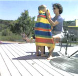
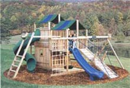

For years, the wood industry told us that wood treated with chromated copper arsenate (CCA) was perfectly safe, even as studies indicated that treated timbers expose us to arsenic, a known carcinogen linked to skin, bladder and liver cancers.
Lulled by wood companies' misleading assurances and seduced by CCA-treated wood's potential to last longer than untreated wood, people used this pressure-treated wood to build everything from decks to fences to raised garden beds - even children's play equipment. The numbers are staggering: More than 90 percent of outdoor wooden structures in the United States are made with arsenic-treated lumber. Research showed that children who frolicked on those play sets, or dug in the soil underneath them, could pick up large amounts of arsenic on their skin. When their little hands inevitably ended up in their mouths, that arsenic entered their bodies.
Last February, the industry bowed to public pressure and agreed to voluntarily phase out the use of CCA. Beginning in January 2004, the U.S. Environmental Protection Agency will not allow CCA for residential wood use. Yet the EPA told us that existing poison-treated structures do not pose any risk. "EPA does not believe there is any reason to remove or replace CCA-treated structures, including decks or playground equipment," the agency stated.
Wrong again. Tired of the EPA's scientifically baseless assurances, the folks at the Environmental Working Group (EWG), a nonprofit environmental research organization, along with the Healthy Building Network and the Environmental Quality Institute at the University of North Carolina-Asheville, supplied people with testing kits to determine if arsenic wiped off their CCA-treated structures and if the soil underneath the structures was contaminated.
The results were shocking - even on wood tip to 15 years old, the amount of arsenic that wiped off on an area equivalent to the size of a 4-year-olds hand exceeded what the EPA considers acceptable in our drinking water. Soil samples taken from two out of five back yards and parks had enough arsenic to qualify as EPA Superfund cleanup sites. (Visit www.ewg.org for more information on the studies.)
Clearly, there is good reason to seek alternatives to CCA-treated wood for your next building project. It's also wise to take measures to protect yourself and your family against arsenic exposure from your existing structures.
The end may be in sight for CCA-treated wood, but you should still exercise caution when buying lumber. Here are some of the best available nontoxic lumbers.
Naturally Rot-Resistant Woods. Certain woods contain natural compounds that make them inherently resistant to insects and microorganisms that cause decay. Top choices include cedar, redwood, black locust, osage orange, hemlock, oak, red mulberry and catalpa. The most decay-resistant boards in these trees are cut from the heartwood at the center of the tree.
When building decks or similar projects, you can protect your investment by using a design that incorporates stone or concrete footings to support wooden members, which would otherwise rest in the ground where moisture and decay-causing microorganisms lurk.
Recycled-Plastic Lumber. Many of the plastic milk bottles, detergent containers and grocery bags we recycle are being mixed with wood fiber to make a new generation of decking material called composite lumber. This recycled plastic lumber is now available in many home-improvement stores, including The Home Depot and Lowe's.
These products last as long as CCA-treated wood. Unfortunately they cost up to 80 percent more. Manufacturers, however, say the increased cost is offset because the composite lumber doesn't need the periodic staining and sealing that traditional wood requires. Composite lum ber can be twice as heavy as many softwoods, so be sure your design allows for the extra weight. Recycled-plastic lumber is not strong enough to use for structural members, such as load-bearing walls, deck frames or floor joists, so you'll need to use traditional wood for those areas.
Composites are a great choice for any surface where you or your children are likely to make skin contact, particularly decking, rails and outdoor tables. These products also are much easier to clean than wood, and you don't have to worry about getting splinters in your hands or feet. You also can use recycled-plastic lumber in the garden, since it contains no arsenic or chromium to contaminate the soil.
New Chemical Treatments. The wood industry has come up with a few arsenic-free wood treatments to replace CCA. Two common alternatives are known as Preserve ( www.treatedwood.com ) and Wolmanized Natural select ( www.naturalselect.com ) lumbers. Preserve's preservative is alkaline copper quaternary, or ACQ. Natural Select uses copper azole as its preservative. Both brands rely on copper as their primary fungicide; the quaternary protects against termites and other fungi that tolerate copper. Both Preserve and Natural Select protect wood as well as CCA-treated wood, yet are far less toxic to humans, making them a good choice in areas where other alternatives aren't practical - structural support members or deck pilings, for example. These are chemical preservatives though, and the copper they contain could be toxic to earthworms and other beneficial soil microbes, so they shouldn't be used in the garden. Expect to pay 15 percent to 30 percent more for these alternatives than you would for CCA-treated wood.
Borates. In cases where the wood will not be exposed to the soil or water, borates, a form of naturally occurring salt, will help prevent decay from fungi and wood-boring insects such as carpenter ants and termites. Considered very low in toxicity, borates are easily applied in liquid form using a standard sprayer. Borates are water soluble, so they will leach from wood that's exposed to water. Restrict their use to protected projects.
So, you now fear that your deck or worse, your children's play equipment, is permeated with arsenic. What should you do?
Test the soil. If you have CCA-treated wood around your vegetable beds, test the soil to find out if it contains dangerous levels of arsenic. A certain amount of arsenic occurs naturally, but too much inhibits plant growth. Contact the Environmental Working Group (EWG) for low-cost tests for arsenic-tainted soil [(202) 667-6982; www.ewg.org ].
Replace what you can. It's not the easiest choice, but it really is the best longterm solution. Even if you can't afford to replace an entire piece, try to replace surfaces that will be making skin contact, such as handrails.
Seal it. Until recently, the standard recommendation was to seal the wood at least once a year with polyurethane. However, the EWG has found that regular use, along with weather, breaks down the sealants in just a few months. They recommend re-sealing every six months - a wise move for anything you can't replace.
Wash your hands. Head for soap any time you make contact with CCA, and be especially vigilant about washing children's hands.
Stay clear. Keep children and pets out of the soil around pressure-treated decks or play sets. They can pick up particles of arsenic from the soil and ingest this carcinogen.
Dispose of it properly. CCA-treated wood should never be burned - the toxic chemicals used to treat it become concentrated in the ashes. Until better alternatives are available, the best course of action is to take the wood to a landfill. Some landfills, however, no longer accept this material, so check before you load the truck.
Take action. The next time you build, use recycled or nontoxic lumbers. Shop for alternative wood in your area by using the arsenic-free lumber locator via www.healthybuilding.net. Buying a play set for your children? For a list of manufacturers who build with arsenic-free wood, contact the Center for Environmental Health [(510) 594-9864; www.cehca.org ]. Lobby your community to test and, if needed, replace wood structures at public playgrounds. Planet Playgrounds ( www.planetplaygrounds.com ) is one manufacturer that makes ACQ-treated commercial playground equipment. You also can contact the U.S. Consumer Product Safety Commission ( www.cpsc.gov ) to support advocacy groups' push to ban CCA-treated wood in playground equipment.
|
 Playnation ( www.playnation.com ) was the first national playground manufacturer to exclusively use arsenic-free lumber. |
|
 |
|
|
|
|